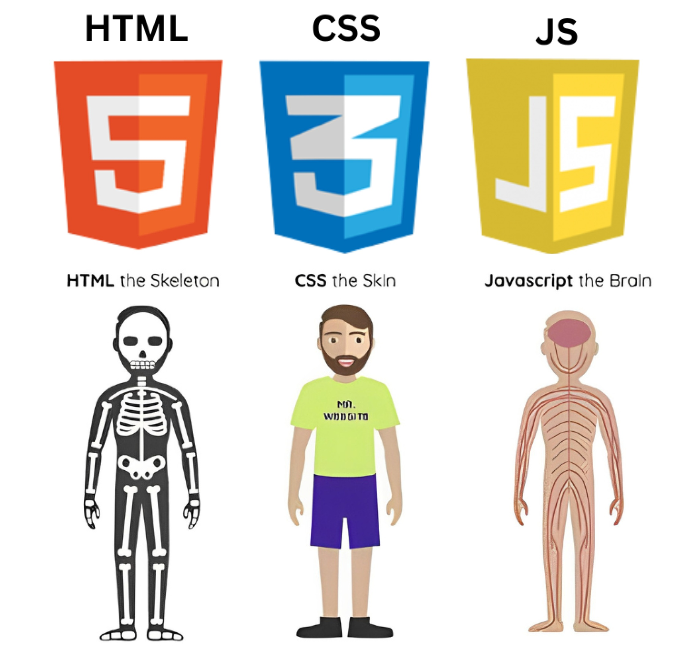

HTML 01 — Introducción a HTML5
HTML (HyperText Markup Language) describe la estructura y el contenido de una página: dice qué es cada cosa, no cómo se ve. Aquí ves de dónde viene, cómo se organiza un documento y qué reglas siguen para escribir código bien formado; el detalle del texto está en el capítulo 02.
Conocimientos previos
- Usar VS Code y guardar los archivos con la extensión correcta (
.html). - Rutas relativas dentro de una carpeta de proyecto (
./,../). - Idea general de qué hace un navegador al abrir una URL.
1. Qué es HTML y cuál es su papel
1.1 Estructura, presentación y comportamiento
| Tecnología | Pregunta | Capa | Archivo |
|---|---|---|---|
| HTML | ¿Qué hay? | Estructura y contenido | .html |
| CSS | ¿Cómo se ve? | Presentación | .css |
| JavaScript | ¿Qué hace? | Comportamiento | .js |
HTML son los cimientos y las paredes, CSS la pintura, JavaScript la instalación eléctrica. HTML no programa: solo declara significado; lo que debe ocurrir va en JavaScript y lo que debe lucir va en CSS, en ficheros separados.

1.2 Origen: de SGML a HTML5
- SGML (ISO 8879): meta-lenguaje del que HTML hereda las etiquetas de apertura y cierre.
- HTML 4.01 (1999): separa contenido y estilo; de ahí el anidamiento estricto.
- XHTML 1.0/2.0: HTML como XML estricto; el 2.0 se abandonó por incompatible con la web real.
- WHATWG y HTML5: en 2004 Apple, Mozilla y Opera fundaron el WHATWG; el W3C publicó HTML5 en 20141.
- Hoy: ya no hay "versiones": rige un único HTML Living Standard.
<!DOCTYPE html> no es una etiqueta: es la declaración que activa el modo estándar y evita el quirks mode (navegadores de los 90).
1.3 Qué aporta HTML5
- Semántica:
header,nav,main,section,article,asideyfooterdescriben el papel del contenido en lugar dedivgenéricos. - Formularios: tipos
email,number,date,rangey atributosrequired,pattern, con validación nativa; ver 06-formularios-html5.md. - Multimedia nativa:
<video>,<audio>y<canvas>, sin plugins como Flash. - APIs: geolocalización,
localStorage, drag & drop,fetch(territorio de JavaScript). - Accesibilidad y SEO: el significado lo entienden mejor lectores de pantalla y buscadores.
1.4 Mito: "HTML5 = todo el stack moderno"
HTML5 no es un framework: es solo el estándar de marcado. Se cita para vender cursos con CSS3, JavaScript ES6 o APIs, pero eso es complemento. Tampoco existe CSS3 como especificación separada (CSS crece por módulos): "HTML5 y CSS3" es marketing. Y HTML no es lenguaje de programación (no hay variables ni bucles) sino de marcado.
HTML5 en una frase
- Sí es el estándar de marcado: define etiquetas, atributos y estructura del documento.
- No es CSS, JavaScript ni un framework: eso se añade después, en ficheros aparte.
2. Anatomía de un documento HTML
2.1 Plantilla completa (boilerplate)
Memoriza este esqueleto: lo usarás en todos los ejercicios.
<!DOCTYPE html> <!-- HTML5: declaración, primera línea -->
<html lang="es"> <!-- Raíz; lang = idioma del contenido -->
<head>
<meta charset="UTF-8"> <!-- Codificación: ñ, tildes y € -->
<meta name="viewport" <!-- Responsivo: obligatorio en móvil -->
content="width=device-width, initial-scale=1.0">
<meta name="description" <!-- Descripción para buscadores -->
content="Blog de María sobre desarrollo web.">
<title>Blog de María · Desarrollo web</title> <!-- Título de la pestaña -->
<link rel="icon" href="favicon.svg"> <!-- Favicon -->
<link rel="stylesheet" href="css/estilos.css"> <!-- CSS externo -->
<meta property="og:title" content="Blog de María"> <!-- Al compartir -->
<meta property="og:description" content="Apuntes y proyectos."> <!-- en redes -->
</head>
<body>
<!-- Empieza aquí TODO el contenido visible -->
<header><h1>Mi blog de desarrollo web</h1></header>
<main><h2>Bienvenidos</h2><p>Mi primer artículo.</p></main> <!-- (1)! -->
<footer><p>© 2026 María López</p></footer> <!-- (2)! -->
</body>
</html>
<main>concentra el contenido único de la página y solo puede haber uno visible.©es una entidad: con UTF-8 podrías escribir el símbolo © directamente.
2.2 Qué hace cada parte
<html> es la raíz; <head> guarda los metadatos (información sobre la página) y <body> el contenido visible (información de la página).
charset: dentro de los primeros 1024 bytes, o aparecerán caracteres raros.viewportes obligatorio en responsivo: sin él los móviles renderizan a ~980 px.titlees obligatorio, único por página y corto;descriptionlo lee Google para el recuadro de resultados (SEO) yog:title/og:description, la vista al compartir en redes.- En
<body>, contenedores semánticos y un<main>único por página.
Error común
<html>sinlang="es": el lector de pantalla anuncia con el acento equivocado (leerá "añadir" con fonética inglesa) y los buscadores malinterpretan el idioma.<meta charset>al final del<head>o codificacióniso-8859-1: aparecenñen lugar deñy€en lugar de€.
3. Elementos, etiquetas y atributos
3.1 Elemento, etiqueta y contenido
La etiqueta (tag) es el texto entre ángulos (<p>, </p>); el elemento une apertura, contenido y cierre (<p>Hola</p>); el atributo va solo en la etiqueta de apertura.
3.2 Elementos vacíos
Un elemento vacío (void) no tiene contenido ni cierre: representa una acción o un recurso, no un contenedor.
<img src="foto.jpg" alt="Equipo celebrando la copa"> <!-- recurso: imagen -->
<br> <!-- salto de línea, uso raro -->
<hr> <!-- separador temático -->
<input type="email" name="correo"> <!-- campo de formulario -->
<meta charset="UTF-8">
<link rel="stylesheet" href="estilos.css">
HTML5 admite el estilo XHTML <img ... />, pero la convención es no escribir la barra.
3.3 Atributos: nombre, valor y booleanos
- Siempre en la etiqueta de apertura, con formato
nombre="valor"(comillas dobles por convención) y nombres en minúsculas (excepción heredada de SVG:viewBox). - Un mismo atributo no puede repetirse en una etiqueta.
<a href="matricula.html" title="Inscripción al ciclo">Matricularme</a>
<input type="text" name="apellido" required> <!-- booleano: basta con estar presente -->
<input type="text" name="dni" disabled> <!-- booleano: deshabilitado de fábrica -->
<input type="checkbox" name="acepto" checked> <!-- booleano: marcado por defecto -->
Los atributos booleanos no llevan valor: su presencia activa la propiedad, así que required, nunca required="true". Habituales: disabled, required, checked, selected, readonly, autofocus. Entre los universales destacan id (único, el DNI del elemento) y class (repetible).
Autoevaluación: booleanos
Un compañero escribe <input type="text" name="dni" required="true">. ¿Es correcto? ¿Y <input type="checkbox" name="acepto" checked="false">?
Respuesta
No, en los dos casos. Los booleanos no llevan valor: basta con que aparezcan (required, checked). La casilla con checked="false" seguiría marcada, porque el atributo existe.
3.4 Anidamiento correcto
HTML es jerárquico: los elementos forman un árbol. Regla de oro: lo que se abre de último, se cierra de primero.
<!-- CORRECTO: cierres en orden inverso -->
<article>
<h2>Noticias del ciclo</h2>
<p>Estudiaremos <strong>HTML semántico</strong> esta semana.</p> <!-- (1)! -->
</article>
<!-- INCORRECTO: cierres cruzados -->
<article>
<p>Estudiaremos <strong>HTML semántico.</p> <!-- (2)! -->
</strong>
</strong>se cierra dentro del<p>: el árbol queda como esperabas.- Aquí los cierres van en orden directo: el navegador "lo arregla", pero el árbol resultante no es este.
El segundo ejemplo "funciona" porque los navegadores son tolerantes, pero el árbol es erróneo: CSS, JavaScript y lectores de pantalla trabajan con otra estructura.
Anti-patrón prohibido: cierres cruzados
- Dejar el código cruzado "porque se ve bien": el árbol DOM real no es el que diseñaste.
- Meter bloques (
<p>,<ul>,<h2>) dentro de un<p>: el navegador los expulsa solo y el resultado no es el que esperabas.
3.5 Mayúsculas y minúsculas
HTML no distingue mayúsculas: <P>, <p> y HREF="../x" son lo mismo (herencia de SGML). Aun así se escribe en minúsculas: es la convención de MDN y el W3C y, sobre todo, si un día se sirve como XHTML/XML sí las distinguirá y dejará de funcionar.
Error común
- Copiar código en mayúsculas (
<BODY CLASS="Menu">): en HTML funciona, pero rompe la convención y fallaría en XHTML. - Confiar en que "el navegador lo arregla" al anidar en cruz: el DOM resultante no es el que diseñaste.
3.6 Bloque y línea: no es lo mismo que display
| Comportamiento | Ejemplos | Efecto por defecto |
|---|---|---|
| Bloque (block) | p, h1-h6, div, ul, li, section |
Todo el ancho, en línea nueva |
| Línea (inline) | a, strong, em, span, img, code |
Dentro del texto |
Es la semántica de partida del elemento, no una propiedad CSS: con display: block conviertes un <span> en bloque y con display: inline un <p> en línea; por eso la respuesta a "¿es lo mismo que display?" es no: son capas distintas. Ojo: img es inline pero no es texto; li, de bloque. Los valores de display (block, inline, inline-block, flex, grid, none) se estudian en ../css/07-flujo-multicolumna-tablas-display.md.
4. Entidades de caracteres y codificación
4.1 Caracteres reservados
El navegador interpreta <, > y & como parte del lenguaje; para mostrarlos como texto se usan entidades:
| Se muestra | Entidad |
|---|---|
< |
< |
> |
> |
& |
& |
© |
© (copyright) |
<p>Para enlazar CSS escribe <code><link rel="stylesheet"></code>.</p>
<p>Aprende HTML y CSS & JavaScript. © 2026</p>
Un & en plena URL
En https://x.es/buscar?q=html&orden=fecha el navegador muestra un & simple, pero en el código el ampersand va como entidad: así el validador no lo confunde con el inicio de otra entidad.
4.2 El espacio no visible:
(non-breaking space) inserta un espacio que impide el salto de línea:
Para "empujar" el diseño es un anti-patrón: eso lo resuelve CSS con margin y padding (ver ../css/03-modelo-de-caja.md).
4.3 ¿Y los acentos y la ñ?
Con charset="UTF-8" no necesitas ninguna entidad: escribe los caracteres directamente.
<!-- CORRECTO: con UTF-8, acentos y ñ van "pelados" -->
<p>Matrícula, diseño, lógica de programación y café.</p>
<!-- VÁLIDO, pero innecesario: matrícula, diseño, café -->
Cuándo sí una entidad: si el carácter es reservado (<, >, &: siempre obligatorio); si la herramienta no soporta UTF-8; si el texto debe mostrar la propia entidad; y para evitar saltos de línea. Error frecuente: guardar en VS Code como ANSI/ISO-8859-1 (Archivo → Guardar con codificación → UTF-8) y dejar un & suelto (HTML & CSS → HTML & CSS).
5. Validación y herramientas de desarrollo
Que el código "funcione" no significa que sea correcto.
5.1 Validador del W3C
https://validator.w3.org/ acepta pegar el código, indicar la URL o subir el archivo:
Pega el HTML completo en el área de texto: es lo habitual con fragmentos o con la práctica de clase.
Valida la página ya publicada: comprueba lo que hay en el servidor, no solo el archivo local.
Sube el .html desde el disco: es la opción habitual antes de entregar.
Los mensajes son errors (etiqueta sin cerrar, lang ausente, id duplicado) o warnings/notices (posibles mejoras). Ejemplo:
Es decir: un título principal dentro de un contenido tangencial, invisible en pantalla.
5.2 Pestaña Elements de las herramientas de desarrollo
Con F12 (o Ctrl+Shift+I) inspeccionamos el árbol DOM real que construyó el navegador, el que usan CSS y JavaScript:
- Elements: árbol de nodos; compara lo que escribiste con lo que entendió el navegador.
- Styles / Computed: qué reglas CSS ganan en la cascada.
- Problemas/Console: errores de sintaxis y peticiones fallidas.
- Lighthouse: auditoría de accesibilidad, SEO y rendimiento.
Si un estilo "no te hace caso", comprueba en Elements si el nodo existe: casi siempre es un error de anidamiento, no de CSS.
6. Ejemplo práctico: página mínima bien formada
Matrícula de ciclo, cada línea comentada y sin estilos.
<!DOCTYPE html> <!-- HTML5 -->
<html lang="es"> <!-- Idioma: español -->
<head>
<meta charset="UTF-8"> <!-- UTF-8: acentos y ñ -->
<meta name="viewport" content="width=device-width, initial-scale=1.0"> <!-- Responsivo -->
<title>Matrícula DAW · Curso 2026-2027</title> <!-- Título de la pestaña -->
<link rel="icon" href="favicon.svg"> <!-- Favicon -->
<link rel="stylesheet" href="css/estilos.css"> <!-- CSS externo -->
</head>
<body> <!-- Contenido visible -->
<header> <!-- Cabecera -->
<h1>Matrícula · Desarrollo de Aplicaciones Web</h1> <!-- Único h1 -->
<nav> <!-- Navegación -->
<ul><li><a href="index.html">Inicio</a></li><li><a href="horario.html">Horario</a></li></ul>
</nav>
</header>
<main> <!-- Principal y único -->
<h2>Datos del alumno</h2> <!-- Encabezado de 2.º nivel -->
<p>Completa los campos para <strong>iniciar</strong> la matrícula.</p>
<form action="confirmacion.html" method="post"> <!-- Envía los datos -->
<label for="nombre">Nombre y apellidos:</label> <!-- (1)! -->
<input type="text" id="nombre" name="nombre" required> <!-- Obligatorio -->
<label for="correo">Correo electrónico:</label>
<input type="email" id="correo" name="correo" required> <!-- Validación nativa --><!-- (2)! -->
<button type="submit">Enviar solicitud</button>
</form>
</main>
<footer> <!-- Pie de página -->
<p>© 2026 IES Ejemplo · Ciclo DAW</p> <!-- Entidad de copyright -->
</footer>
</body>
</html>
- El
fordel<label>coincide con eliddel campo: al enfocar el texto se activa el input. type="email"activa la validación nativa y el teclado adecuado en el móvil.
Comprueba que…
-
<!DOCTYPE html>en la primera línea. -
langycharsetdeclarados en el<head>. - Un solo
<h1>y sin saltos de nivel. - Etiquetas cerradas en orden inverso.
- Validador sin errors.
Un horario de clase se tabula, no se lista: va en 05-tablas.md; practica en el ejercicio 8 de 09-ejercicios.md.
7. Claves para el examen
Claves para el examen
<!DOCTYPE html>no es una etiqueta: activa el modo estándar; trío clave del<head>:charset,viewport,title.- Olvidar
lang="es"ocharset="UTF-8"es lo más frecuente: verásñy un lector con acento inglés. - HTML5 ≠ "web moderna": HTML es solo el estándar de marcado y CSS3 como especificación separada no existe.
- Booleanos (
disabled,required,checked) no llevan valor: su presencia ya activa la propiedad. - HTML admite mayúsculas, pero se escribe en minúsculas: convención y compatibilidad con XHTML/XML.
- Anidamiento: lo que se abre de último, se cierra de primero, aunque el navegador lo "arregle".
- Bloque/línea no es lo mismo que
display; entidades solo para<,>,&(más ): con UTF-8 los acentos van directos. Valida en https://validator.w3.org/.
Practica esta unidad
- Enunciados: Ejercicios de la Unidad 1 — Introducción a HTML5 — cuatro retos (
U1.1aU1.4) — del más básico al más avanzado. - Comprueba tu trabajo con las soluciones de esta unidad.
-
El W3C publicó HTML5 como Recomendación el 28 de octubre de 2014; hoy la mantiene el WHATWG como HTML Living Standard. ↩